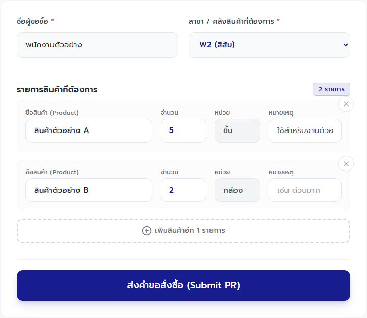
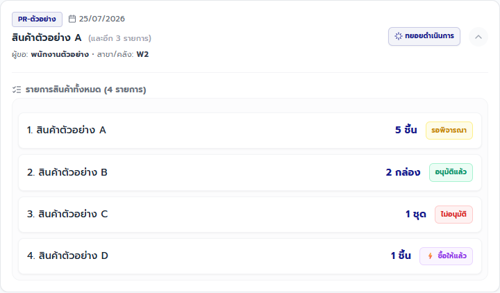

คู่มือพนักงาน · PR — ขอซื้อสินค้า
คู่มือส่งคำขอสั่งซื้อ PR
ส่งรายการขอซื้อให้ฝ่ายจัดซื้อครบ ถูกคลัง และไม่เกิดคำขอซ้ำ
ฉบับทดสอบภายใน: ใช้ตรวจขั้นตอนและความเข้าใจก่อนประกาศใช้
ส่วนที่ 1
เตรียมก่อนเริ่ม
- เปิด PR ผ่าน Main Portal และตรวจว่าชื่อผู้ขอซื้อเป็นชื่อของคุณ
- เตรียมคลังปลายทาง ชื่อสินค้า จำนวน หน่วย และเหตุผลหรือหมายเหตุเมื่อมี
- ตรวจสอบว่าอินเทอร์เน็ตใช้งานได้
ส่วนที่ 2
ทำตามขั้นตอน
-
พนักงานผู้ขอซื้อ
ตรวจชื่อและเลือกคลังปลายทาง
ทำ: ตรวจ “ชื่อผู้ขอซื้อ” แล้วเลือก “สาขา / คลังสินค้าที่ต้องการ” ให้ตรงกับจุดรับของ
เช็ก: ชื่อเป็นบัญชีของคุณ และช่องคลังแสดง W1–W5, C1 หรือ C2 ตามงานจริง

เริ่มจากตรวจชื่อผู้ขอและเลือกคลังปลายทาง เพราะข้อมูลนี้จะส่งต่อให้ PO และ GR ภาพอ้างอิง PR 20260621.02 -
พนักงานผู้ขอซื้อ
กรอกรายการสินค้าให้ครบ
ทำ: พิมพ์เลือกสินค้า ใส่จำนวนมากกว่า 0 ตรวจหน่วย และเขียนหมายเหตุเมื่อจำเป็น หากมีหลายรายการให้กด “เพิ่มสินค้าอีก 1 รายการ”
เช็ก: ทุกรายการมีชื่อสินค้า จำนวน และหน่วยครบ ไม่มีแถวว่างหรือสินค้าผิดรายการ
กรอกตามความต้องการจริงทีละรายการ และลบแถวที่ไม่ใช้ก่อนส่ง ภาพอ้างอิง PR 20260621.02 -
พนักงานผู้ขอซื้อ
ตรวจแล้วส่งคำขอหนึ่งครั้ง
ทำ: อ่านคลัง สินค้า จำนวน หน่วย และหมายเหตุอีกครั้ง แล้วกด “ส่งคำขอสั่งซื้อ (Submit PR)” เพียงครั้งเดียว
เช็ก: ระบบแจ้ง “ส่งคำขอสั่งซื้อเรียบร้อยแล้ว!” และล้างรายการในฟอร์มเพื่อพร้อมทำงานถัดไป
กดส่งเพียงครั้งเดียวแล้วรอผล ห้ามทำคำขอใหม่เมื่อยังไม่ตรวจประวัติ ภาพอ้างอิง PR 20260621.02 -
พนักงานผู้ขอซื้อ
เช็กผลในประวัติรายสินค้า
ทำ: เลื่อนลงที่ “ประวัติคำขอสั่งซื้อ (รวมทุกสาขา)” เปิดการ์ดล่าสุด และเทียบสถานะของแต่ละรายการ
เช็ก: พบบิลล่าสุดและสถานะรายสินค้า: “รอพิจารณา”, “อนุมัติแล้ว”, “ไม่อนุมัติ” หรือ “ซื้อให้แล้ว” ตามผลของฝ่ายจัดซื้อ

หนึ่ง PR อาจมีหลายสถานะพร้อมกัน ต้องเปิดดูผลแยกทีละสินค้า ภาพอ้างอิง PR 20260621.02
ส่วนที่ 3
เช็กก่อนจบงาน
งานเสร็จเมื่อครบทั้ง 4 ข้อ
- พบบิลล่าสุดใน “ประวัติคำขอสั่งซื้อ (รวมทุกสาขา)”
- ชื่อผู้ขอ คลัง สินค้า จำนวน หน่วย และหมายเหตุตรงกับคำขอจริง
- สถานะรายสินค้าเริ่มที่ “รอพิจารณา” หรือเปลี่ยนตามผลของฝ่ายจัดซื้อ
- ไม่มีคำขอใบที่สองจากการกดซ้ำ
ส่วนที่ 4
แก้ปัญหาที่พบบ่อย
เลือกข้อความที่ตรงกับหน้าจอ แล้วทำตามทีละข้อ
ระบบแจ้ง “กรุณาเลือกสาขา/คลังสินค้า”
- เลือกคลังปลายทางที่ต้องรับสินค้าจริง
- ตรวจคลังอีกครั้งก่อนกดส่ง
ระบบแจ้ง “กรุณาระบุสินค้าที่ต้องการอย่างน้อย 1 รายการ”
- พิมพ์เลือกสินค้าและใส่จำนวนมากกว่า 0
- ตรวจว่าทุกรายการมีชื่อสินค้า จำนวน และหน่วยครบ
กดส่งแล้วโหลดนาน หรือไม่แน่ใจว่าส่งสำเร็จ
- อย่ากดส่งซ้ำและอย่าทำ PR ใหม่ทันที
- เลื่อนลงที่ประวัติ แล้วกด “รีเฟรช” หนึ่งครั้ง
- ถ้าพบบิลล่าสุด ให้เทียบคลังและรายการแล้วจบงาน
- ถ้าไม่พบหรือข้อมูลไม่ตรง ให้หยุดและแจ้งหัวหน้าก่อนลองใหม่
บิลเดียวขึ้น “ทยอยดำเนินการ” หรือมีหลายสถานะ
- เปิดรายละเอียดของบิล
- อ่านสถานะแยกทีละสินค้า
- อย่าทำ PR ใหม่แทนรายการที่ยัง “รอพิจารณา”
เห็นข้อความว่ามีเวอร์ชันใหม่ หรือหน้าเปิดค้างไว้นาน
- หยุดกรอกและกดรีโหลดตามข้อความของระบบ
- ตรวจประวัติก่อนเริ่มกรอกใหม่เพื่อป้องกันคำขอซ้ำ
เข้าแอปไม่ได้ หรือระบบแจ้งว่าไม่มีสิทธิ์
- กลับไปเปิด PR ผ่าน Main Portal
- อย่าใช้บัญชีของคนอื่น
- แจ้งหัวหน้าให้ตรวจสิทธิ์เข้าแอป PR
- ระบบแจ้ง “กรุณาเลือกสาขา/คลังสินค้า”
-
- เลือกคลังปลายทางที่ต้องรับสินค้าจริง
- ตรวจคลังอีกครั้งก่อนกดส่ง
- ระบบแจ้ง “กรุณาระบุสินค้าที่ต้องการอย่างน้อย 1 รายการ”
-
- พิมพ์เลือกสินค้าและใส่จำนวนมากกว่า 0
- ตรวจว่าทุกรายการมีชื่อสินค้า จำนวน และหน่วยครบ
- กดส่งแล้วโหลดนาน หรือไม่แน่ใจว่าส่งสำเร็จ
-
- อย่ากดส่งซ้ำและอย่าทำ PR ใหม่ทันที
- เลื่อนลงที่ประวัติ แล้วกด “รีเฟรช” หนึ่งครั้ง
- ถ้าพบบิลล่าสุด ให้เทียบคลังและรายการแล้วจบงาน
- ถ้าไม่พบหรือข้อมูลไม่ตรง ให้หยุดและแจ้งหัวหน้าก่อนลองใหม่
- บิลเดียวขึ้น “ทยอยดำเนินการ” หรือมีหลายสถานะ
-
- เปิดรายละเอียดของบิล
- อ่านสถานะแยกทีละสินค้า
- อย่าทำ PR ใหม่แทนรายการที่ยัง “รอพิจารณา”
- เห็นข้อความว่ามีเวอร์ชันใหม่ หรือหน้าเปิดค้างไว้นาน
-
- หยุดกรอกและกดรีโหลดตามข้อความของระบบ
- ตรวจประวัติก่อนเริ่มกรอกใหม่เพื่อป้องกันคำขอซ้ำ
- เข้าแอปไม่ได้ หรือระบบแจ้งว่าไม่มีสิทธิ์
-
- กลับไปเปิด PR ผ่าน Main Portal
- อย่าใช้บัญชีของคนอื่น
- แจ้งหัวหน้าให้ตรวจสิทธิ์เข้าแอป PR